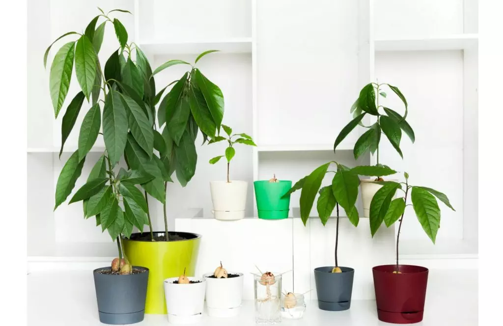

О создателе
Почему я создал этот сайт?
Потому что, я - Андрей Макаров, проживаю за Полярным кругом, в городе Заполярный. Здесь много снега, холодно, полыхает северное сияние и зимой постоянно ночь, то есть солнце не выходит из-за горизонта.
И у меня на подоконнике растёт авокадо, родиной которого считается Мексика и Центральная Америка. Дерево выросло сильным с огромными зелеными листьями. То есть 2 способ для выращивания этого растения, который я описал ранее, работает, проверено мной на практике.
Желаю вам успехов в достижении своих желаний!